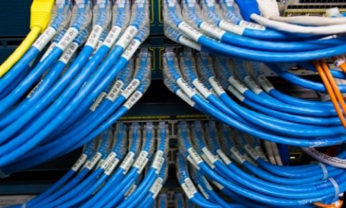

Nosssas soluções VOIP proporcionam a sua empresa maior mobilidade. Sem a necessidade de uma estrutura fixa podemos conectar seus funcionários em Home Office a Custo Zero. Permita que seus funcionários volantes interajam com os demais funconários da sua coporação sem custo adicional.
Todo conforto, praticidade, disponibilidade, mobilidade e continuidade a sua empresa com Segurança e sem Custos Extras.
Nosso diferencial?
Disponibilizamos aos nossos clientes váriadas contratações de Suporte. Você poderá adequar o SLA de acordo com sua Urgência e Criticidade.

Cabeamento Estruturado
O cabeamento estruturado deve ser planejado e executado por técnicos especialistas, qualificados e certificados. Nós temos equipes preparadas para entregar o melhor resultado com o custo-benefício que se adeque a sua empresa.
Entregamos confiabilidade e conectividade a sua empresa.
Reduzindo a indisponibilidade da sua equipe por falhas estruturais, é possível manter sua empresa funcionando de forma contínua para seus clientes.
Criação/Reforma do Data Center
A criação ou reforma do Data Center precisa ser baseadas em alguns pontos que são pré-requisitos para garantir um ambiente, estável, seguro e que permita o crescimento da empresa.
Na construção civil desse ambiente devemos garantir que Porta corta Fogo, Pisos Elevados, Forros Modulados, Nobreaks, Sistema de Iluminação, Sistemas de Combate a Incêndio, Sistema de Refrigeração e Sistema de Monitoração estejam presentes no projeto e atendam as dimensões e especificações técnicas do ambiente.
A Suprir Tecnologia foi criada em 2018 destinada ao mercado corporativo com intuito de qualificar o fornecimento de Equipamentos, Hardware, Periféricos e Insumos para a área de Tecnologia da Informação.
Baseado em algumas pesquisas realizadas, foi possível identificar dificuldades, por parte de fornecedores, no cumprimento técnico dos pré-requisitos especificados nas cotações ao entregar o material adquirido.
Nossa Missão
Nossa Missão é identificar as especificações técnicas,
entender a necessidade do cliente, propor soluções de
baixo custo e com alta qualidade.
Nossa Visão
Nossa Visão é manter o relacionamento próximo aos
nossos clientes consolidando o conceito de
parceiros comerciais.